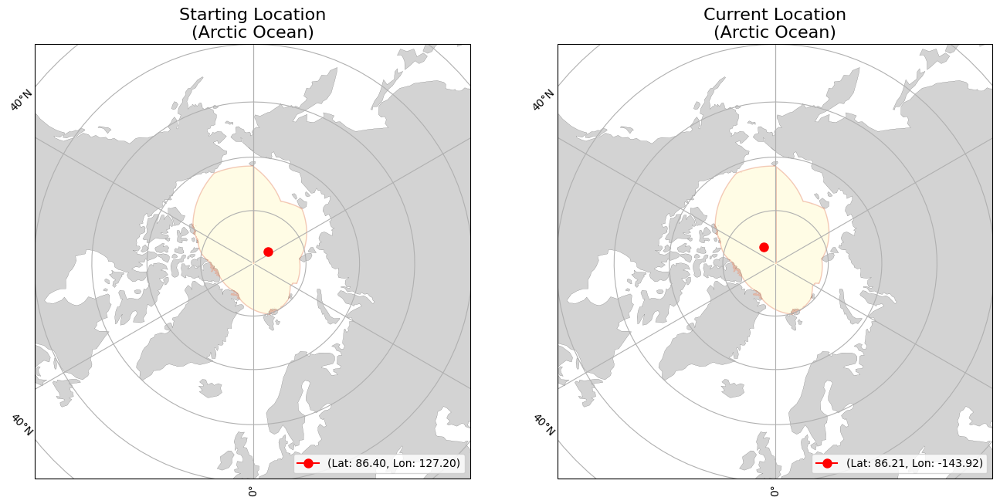
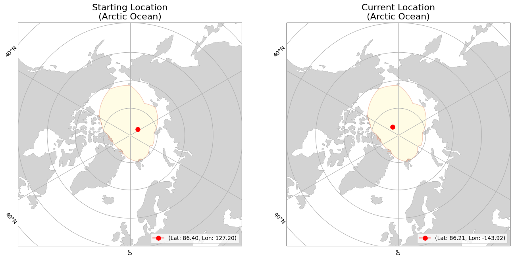

lon=179.4634
(Arctic Ocean)
lon=-148.51447
(Arctic Ocean)
|
|
Buoy | Movement | Temperature | |||
|---|---|---|---|---|---|---|
| ID | 300534064364400 | Initial Position | lat=84.92444 lon=179.4634 (Arctic Ocean) |
Average Air Temperature | avg_air_temp | |
| Type | SVP5S 010 | Current Position | lat=86.16939 lon=-148.51447 (Arctic Ocean) |
Minimum Air Temperature | min_air_temp | |
| Start Date | 09-10-2024 | Daily Distance Mean | 8.568 | Maximum Air Temperature | max_air_temp | |
| End Date | 12-26-2024 | Daily Distance Median | 8.042 | Average Sea Surface Temperature | avg_sst | |
| Status | floating | Daily Distance Standard Deviation | 4.619 | Minimum Sea Surface Temperature | min_sst | |
| Total Distance Start to End Dates | 925.355 | Maximum Sea Surface Temperature | max_sst | |||
 
